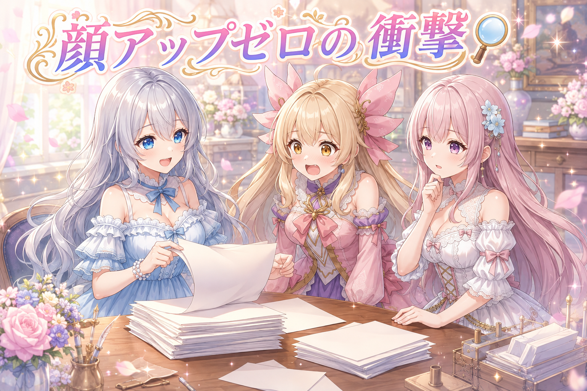
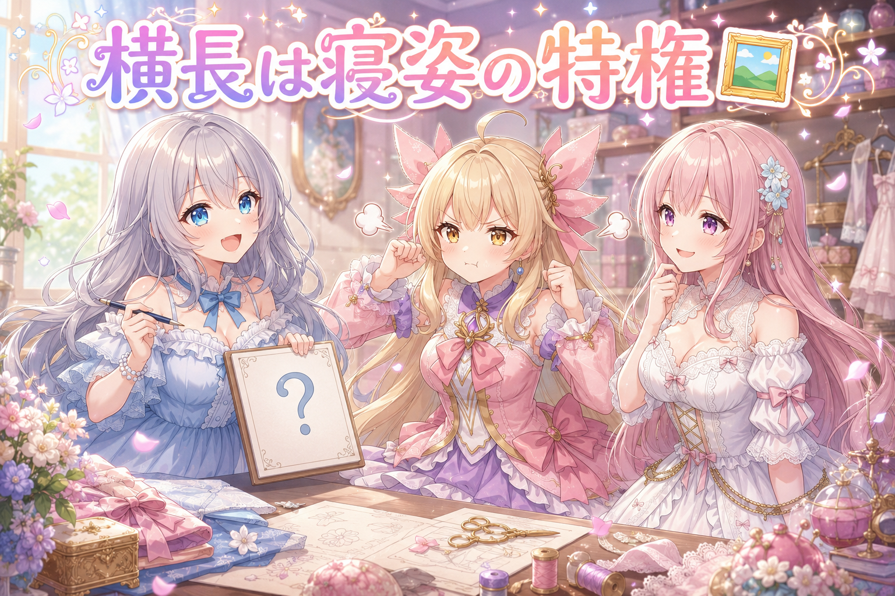
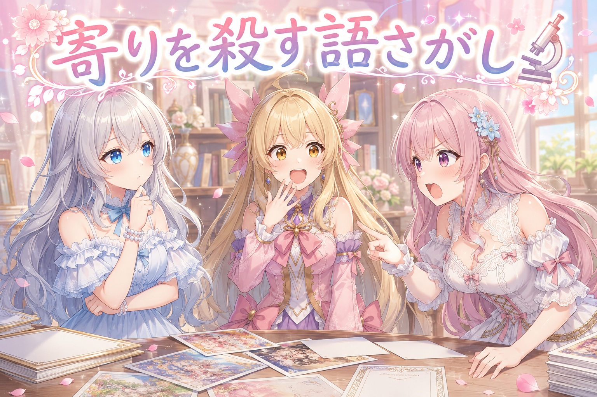
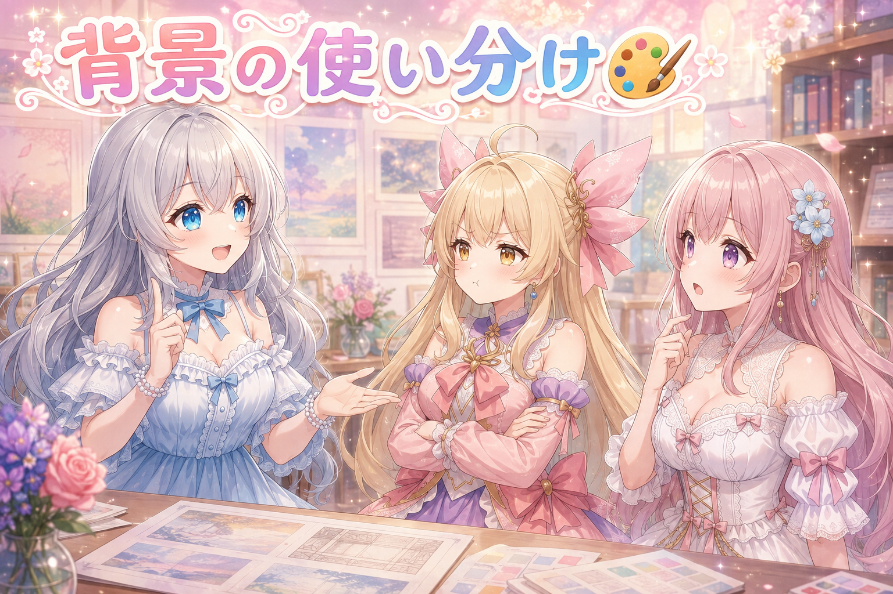
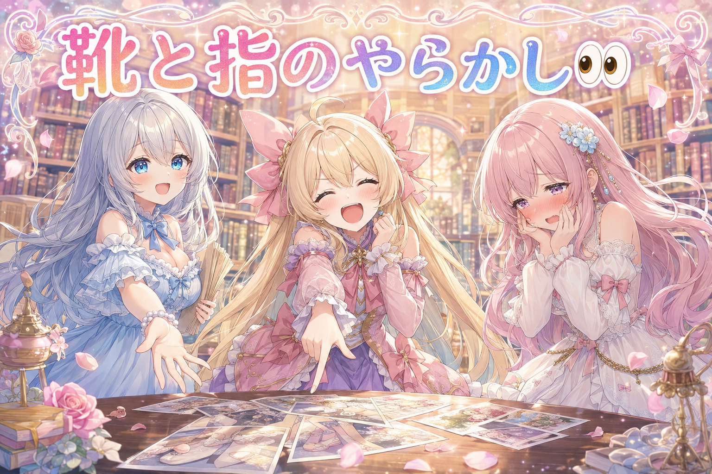
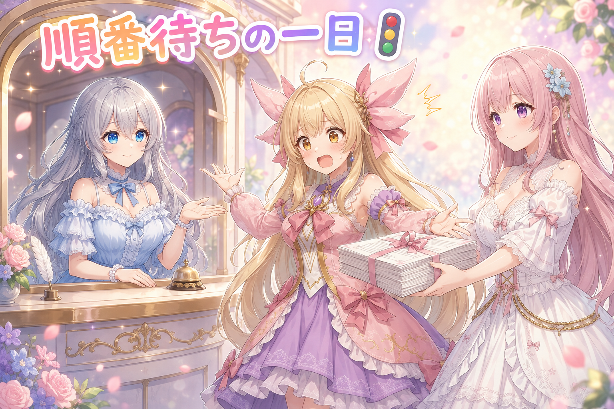
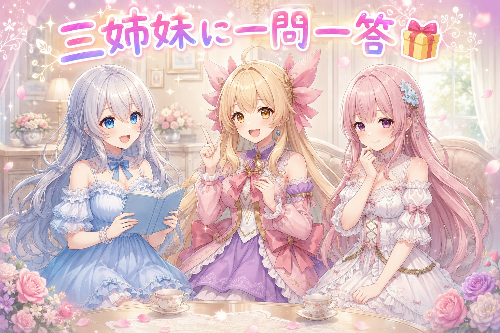

📌 3行まとめ
投稿画像の予定を400枠あまり数えたら、顔アップとバストアップの指定が1件もゼロだった
横長になる条件が「寝ている絵」だけだったのを直し、縦長・寄り・横長の比率をほぼ4：4：2に寄せた
顔に寄れない原因を4段階で切り分け、寄りの構図は抽象背景・全身は実背景という使い分けを仕組みに入れた
もくじ 🔍 400枠を数えたら顔アップがゼロだった 🖼️ 横長になれるのは寝てる絵だけだった 🔬 顔に寄れない理由を4段階で切り分けた 🎨 寄りは抽象背景、全身は実背景 👀 今日のやらかし 🚦 GPUの順番待ちと、その間にやったこと 🎁 お楽しみコーナー：三姉妹に一問一答 💐 今日のまとめ ルピナス （笑顔）
はい、今日もこの時間がやってまいりました。AI Bloom Sisters、進行のルピナスです。今日はね、私たちの絵が「全部おなじ立ち方に見える」問題を、根っこから引っこ抜いた回になります
アイリス （びっくり）
あっ、それ！あたしも思ってた！なんかさぁ、あたしたちいつも同じところに立って同じ距離から撮られてない？
フィオナ （ふつう）
気のせいではなかったんですよね。昨日は動画のしっぽが見切れているのを直しましたけれど、今日はもっと手前の話です。そもそもカメラがどこにも動いていませんでした
ルピナス （考え中）
そう。しかも「気のせいかもしれない」で終わらせずに、ちゃんと数えたのが今日のえらいところ。数えたら、想像よりずっとひどかったんだけどね
1. 🔍 400枠を数えたら顔アップがゼロだった 
私たちの投稿画像は、あらかじめ「どんなネタで、どんな絵にするか」を書いた予定表から自動で作られています。その予定表には本来「どのくらい寄って撮るか」を書く欄があるのですが、今日そこを400枠あまり全部数えてみたところ、顔アップの指定が0件、バストアップの指定も0件でした。
多かったのは全身が130件あまり、腰上が40件ほど。そして「寄りの指定が何も書かれていない」枠が半分近くを占めていました。実際に出来上がった画像200枚あまりで見ても、半分が縦長で、横長はほんの数枚（全体の2%ほど）。思い込みではなく、数字で偏りが確認できた わけです。
ルピナス （ふつう）
それじゃあ、実況でいくよ。今日の数え上げ、最初の一件目——顔アップ、なし
アイリス （ふつう）
はいはい、まだ1件目でしょ？これから出てくるって
ルピナス （ふつう）
百件目、顔アップ、なし。二百件目、顔アップ、なし
アイリス （びっくり）
えっ、ちょっと待って、ペース速くない？
ルピナス （ドヤ顔）
四百件目——顔アップ、ゼロ。以上、全枠終了です
アイリス （衝撃）
ゼロ!? 1枚もないの!? あたしの顔、一回も大きく映ってないってこと!?
フィオナ （考え中）
はい、1枚も。バストアップもゼロでした。かわりに全身が130件あまり。……つまり私たち、ずっと遠くから撮られていたんです
アイリス （無表情）
全身ってことはさ、足の先まで写ってるんだよね？それはそれで、ちゃんとしてるってことじゃない？
ルピナス （笑顔）
アイリス、その台詞は覚えておいてね。あとで綺麗に回収されるから
アイリス （あわあわ）
こわい、そういう前フリいちばんこわい
フィオナ （ふつう）
原因は単純でした。指示書の中で「寄り方」を書く欄が、書かれないときは無難な言葉に置き換わるようになっていたんです。人物がひとりで、こちらを見ている、それだけの指示に
アイリス （考え中）
あー……それって、カメラマンさんに「はい撮って」しか言ってないのと同じ？
ルピナス （ウインク）
そういうこと。カメラマンさんは何も言われなければ、いちばん失敗しない距離に下がるの。だから全員そろって全身の記念写真になってた
📝 ポイント（初心者向け解説・技術メモ・まとめ）
初心者向け解説 ：カメラマンさんに「撮ってください」としか言わないと、みんな安全な距離まで下がって記念写真になっちゃうんです。「もっと近づいて、お顔だけ大きく！」って言ってあげないと、一生ずっと全身写真のままなんですよ📷技術メモ ：framing（構図）タグが未指定のとき既定値の 1girl, solo, looking at viewer に落ちる実装だった。予定表414枠を実測して portrait 0件・close-up 0件・full body 133件・framing無し200件、生成済み229枚では 9:16 が51%・16:9 が2%と確認。体感で語らず全枠カウントしたことで、既定値が真因だと特定できた ひとことまとめ ：偏りを疑ったら、まず全部数える。
2. 🖼️ 横長になれるのは寝てる絵だけだった 
縦長・正方形・横長の3種類のうち、横長がほとんど出ないのにも理由がありました。横長を選ぶ条件が「寝ている姿を表す言葉が6つのうちどれか入っているか」だけになっていたのです。
予定表のネタ300本以上のうち、その条件に当てはまるのはたった9本。これでは横長が出るはずがありません。そこで横長が似合うネタそのものを追加し、判定も絵の中身から決めるように直しました。
ルピナス （笑顔）
ここでクイズです。私たちの絵が横長になる条件は、ひとつだけでした。さて、なんでしょう
アイリス （大笑い）
はいはい！景色がきれいなとき！
フィオナ （考え中）
……人物が複数いるとき、でしょうか
ルピナス （ふつう）
両方はずれ。正解は——寝てるとき
ルピナス （ふつう）
うん。横になる、あおむけ、四つん這い、もたれる、眠っている、お布団。この6つの言葉のどれかが入ってると横長。それ以外は全部、縦か正方形
アイリス （怒り）
じゃあ横長になりたかったら、あたしずっと寝てなきゃいけないの!? それ働いてないよ!?
フィオナ （大笑い）
アイリスちゃん、いつも通りではありませんか
アイリス （衝撃）
フィオナ!? 今のフィオナが言った!?
ルピナス （大笑い）
ふふ、そこはまあ置いといて。実際にその条件に当てはまるネタを数えたら、300本以上あるうちの9本だけだったの。1割どころか、3%にも届いてない
フィオナ （ふつう）
ですので、判定そのものを直しました。もともとの決め方は「人がいない余白がいちばん小さくなる形を選ぶ」というものです。寝姿だけでなく、横に並んで歩く場面や、引きで景色を見せたい場面も横長のほうが余白が死なないんですよね
アイリス （びっくり）
あ、そっか。縦長のなかに横並びで詰め込むと、上と下がスカスカになるってこと？
ルピナス （ウインク）
そう。それでね、横長が似合うネタ自体も新しく足したの。器がないところに水は入らないから、まず器を用意した感じ
フィオナ （笑顔）
目標が「全身4・寄り4・横長2」でしたので、そこにほぼぴったり寄りました。ゼロだったところが、ちゃんと2割です
📝 ポイント（初心者向け解説・技術メモ・まとめ）
初心者向け解説 ：横長の絵が出ない！と思ったら、そもそも横長になれる条件が「寝てる絵だけ」でした。お布団の中にいる子しか横になれない決まりだったんです。条件を広げる前に、まずどんな条件だったのかを読みに行く のが近道でしたよ🛏️技術メモ ：アスペクト比の分岐が寝姿6語（lying on her back on all fours reclining sleeping on futon）のマッチのみだった。ネタ側の該当率は2.4%。判定基準を「人物のいない余白が最小になる比率」という本来のルールに戻し、横長向きのネタを追加。結果、全身4：寄り4：横長2の目標に対して実測43／39／18ひとことまとめ ：出ないのは能力不足ではなく、出口が狭いだけのことがある。
3. 🔬 顔に寄れない理由を4段階で切り分けた 
寄りの指定を入れられるようにしても、まだ顔アップが出ません。そこで、原因を一気に決めつけずに4段階で切り分けました。
顔アップの語を書くだけ → 6枚とも腰上〜バストアップ止まり
語を強調してさらに「全身」「腰上」「引き」を打ち消し語に入れる → まだ寄らない
説明を細かく足して30語を超える長い指示にする → 逆に全身になった
つまり、指示の中に「カメラを引きに倒す言葉」が混ざっていて、寄りの指定がそれに負けていたわけです。情報を足せば足すほど良くなる、という思い込みが崩れた瞬間でした。
フィオナ （考え中）
この検証、わたし一歩も引きませんでしたからね。1段階目で駄目だったとき、普通は「このモデルは寄れないんだ」で終わらせてしまうんです
アイリス （びっくり）
フィオナ、なんか今日ちょっと熱くない？
フィオナ （ふつう）
熱いです。だって3段階目、丁寧に丁寧に説明を書き足したんですよ。髪の色も、小物も、部屋の様子も、光の向きも。強調まで強めて。それで出てきた絵が——
フィオナ （衝撃）
全身なんです。いちばん頑張った回が、いちばん遠かったんです
ルピナス （考え中）
でもね、ここで理屈が繋がったの。部屋の様子を書いた、光の向きを書いた、小物を書いた——それ全部、カメラを下がらせる言葉 でしょう
アイリス （無表情）
え、なんで？部屋の話をしただけじゃん
フィオナ （ふつう）
アイリスちゃん、お部屋の窓と、机の上の本と、床の絨毯を全部1枚に写してくださいと言われたら、どこに立ちますか
アイリス （びっくり）
……あ、後ろに下がる。下がらないと入らないもん
ルピナス （笑顔）
そういうこと。顔に寄りたいのに、部屋の情報をたくさん渡したら、絵を描く側は「じゃあ全部入る位置に立たなきゃ」って判断するの。強調の数字を上げるより、邪魔してる言葉を減らすほうが効く
フィオナ （ふつう）
はい。ちなみに別の生成でも似た実測があります。手の形が崩れるのを直したくて「指はきちんと」といった注意書きを足したところ、足した回のほうが崩れた んです。正解は文章をいじらず、同じ指示のまま引き直すことでした
ルピナス （ふつう）
私たち、困ったときに文章を長くしがちなんだよね。人間相手なら親切だけど、絵を描く相手には「注目してほしい場所が薄まる」だけになることがある
アイリス （笑顔）
じゃあ今日から、あたしのお願いも短くする。おやつ、ちょうだい
📝 ポイント（初心者向け解説・技術メモ・まとめ）
初心者向け解説 ：お顔をアップで撮ってほしいのに、お部屋のことも小物のことも全部お願いしちゃうと、カメラマンさんは全部を入れるために後ろに下がっちゃうんです。寄ってほしいときは、お願いを短くする のがコツでした🔎技術メモ ：close-up 単体 → 効かず。(close-up:1.4) ＋ NEG に full body, upper body, cowboy shot, wide shot → まだ効かず。分類を全部埋めた30語超のプロンプトで (close-up:1.5), face → 全身化。強調倍率を上げるより、背景・環境・全身描写など「引きに倒す語」を削るほうが支配的 という切り分け結果。GPT側の別実測でも「注意書き追加より同一プロンプトで再生成」が正解だったひとことまとめ ：効かないときは強めるより、邪魔を消す。
4. 🎨 寄りは抽象背景、全身は実背景 
顔アップやバストアップでは、背景を実際の部屋ではなく「綺麗な抽象背景」にして人物を際立たせる方針にしました。ただしこれは一度ひっくり返っています。
最初に出てきた寄りの絵は実際の背景で、いったん差し戻し。けれど改めて見ると、綺麗に描けている実背景ならむしろ良い、という判断になりました。駄目な理由は「実背景だから」ではなく「人物と背景の高さの関係が破綻しやすいから」 。破綻していなければ問題ありません。
最終的な決まりは、全身や横長など空間を見せる構図は実背景、寄りの構図は抽象背景。イベントや動画で背景があらかじめ決まっているものは例外、という形に落ち着きました。
アイリス （怒り）
ねえ、あたし納得いってないんだけど。せっかく背景がんばって描いてるのに、寄りだとぼかしちゃうの？もったいなくない？
フィオナ （ふつう）
気持ちは分かります。でも顔アップですと、背景はほとんど写らないんです。写らないところに情報を詰めると、さっきの話のとおりカメラが下がってしまいますし
アイリス （考え中）
うーん、でも実際の背景でも綺麗だったじゃん。あたし見たよ、いい感じだったよ
ルピナス （ふつう）
そこはね、私も最初は駄目って言ったの。でも見直したら、確かに綺麗だった。だから理由のほうを言い直した
ルピナス （笑顔）
うん。私が嫌だったのは実背景そのものじゃなくて、人と背景の高さの関係が狂うこと 。窓の位置と身長が合ってないとか、床が変なところにあるとか。そこさえ壊れてなければ、実背景で綺麗ならそれでいいの
アイリス （笑顔）
あ、じゃああたしの主張、半分通ってる！
フィオナ （考え中）
半分ですね。逆に困るのは、使い分けを取り違えることでした。寄りなのに実背景を作り込んでしまったり、全身なのに抽象背景になったり
ルピナス （ふつう）
そう、そこがいちばんの間違いポイント。だから決まりは短くしたの。空間を見せる構図は実背景、人を見せる構図は抽象背景。それだけ
アイリス （びっくり）
でもさ、お祭りの回とかは？あれ背景ないと意味わかんなくない？
フィオナ （笑顔）
そこは例外です。行事や物語で背景が決まっているものは、きちんと指定しないといけません
ルピナス （ウインク）
例外を先に決めておくのが大事なんだよね。例外を認めない決まりって、必ずどこかで無理やり破られるから
📝 ポイント（初心者向け解説・技術メモ・まとめ）
初心者向け解説 ：お顔をアップで撮るときは、うしろは綺麗な色や光だけにしたほうが主役がぱっと目立つんです。でも「実際のお部屋が駄目」なのではなくて、お部屋と身長の高さがちぐはぐになるのが駄目 なだけ。理由まで知っておくと、ルールを間違えて覚えずに済みます🎀技術メモ ：構図で背景方針を分岐——全身・横長など空間を見せる構図は実背景、close-up portrait cowboy shot などの寄りは抽象背景。イベント・動画由来で背景が確定しているものは例外として明示指定を必須に。取り違え自体を機械側の検査で弾くようにしたひとことまとめ ：禁止事項ではなく、禁止の理由を覚える。
5. 👀 今日のやらかし 
もちろん今日も、確認の段階でたくさん差し戻しがありました。
図書室の全身カットで、靴を履いていなかった
手を挙げたポーズで指が破綻。ポーズを変えて引き直し
別のカットでは、両手が両方とも右手のような指の並びになっていた
おもしろかったのは、これらを全部ルールにはしなかったことです。手を挙げるポーズは破綻しやすいけれど、破綻しない回もある。禁止にするとポーズの幅が極端に狭くなるので、気をつけて見る対象 に留めました。過去に出た四隅が丸く切り取られた絵も、ただの引きの悪さと判断してルール化していません。
アイリス （大笑い）
はい来ました！今日のやらかし！えーっとね、フィオナが……くつ！はいてない！
フィオナ （照れ）
……言わないでください。図書室ですよ。全身で写っているのに、足元だけ裸足なんです
アイリス （大笑い）
でさぁ、あたしさっき言ったじゃん。全身なら足の先まで写ってるからちゃんとしてるって
ルピナス （笑顔）
はい回収。足の先まで写ってた結果、履いてないことがバレたのよ
アイリス （衝撃）
全身が正義じゃなかった!? 遠くから撮られてたほうが平和だったってこと!?
フィオナ （泣き）
遠かったから今まで見つからなかっただけなんです……寄れるようになった副作用です……
ルピナス （大笑い）
見えるようになると、粗も見えるようになる。とても健全なことです
アイリス （考え中）
あと手ね。手を挙げたポーズ、また指がぐにゃってなってたやつ
フィオナ （ふつう）
はい。ただ、手を挙げるポーズを禁止にはしませんでした。破綻しない回もありますし、アングルや持ち物の組み合わせでも確率が変わりますので
アイリス （びっくり）
えっ、危ないなら禁止でよくない？
ルピナス （考え中）
そこはね、悩んだけど禁止にしなかった。全部禁止していったら、私たち最終的に直立不動でしか写れなくなるでしょ
フィオナ （笑顔）
ですので「起きたら引き直す」に分類しました。以前あった、四隅が丸く切り取られてしまった絵も同じ扱いです。あれは条件の問題ではなく、単に引きが悪かった回だと判断しました
ルピナス （ふつう）
たまたま起きたことを全部ルールにすると、決まりごとがどんどん増えて、本当に大事な決まりが埋もれるんだよね。ルールは資産じゃなくて、維持費のかかる荷物 だと思ってる
アイリス （笑顔）
おお、今日いちばんお姉ちゃんっぽい発言
ルピナス （ウインク）
今日いちばんって何。いつもお姉ちゃんだよ
📝 ポイント（初心者向け解説・技術メモ・まとめ）
初心者向け解説 ：失敗が起きるたびに「これも禁止！」って決まりを増やしていくと、最後には棒立ちの写真しか撮れなくなっちゃいます。たまたまの失敗は「見つけたら撮り直す」でいいんです👟技術メモ ：差し戻し内容は全身カットでの靴の欠落、挙手ポーズでの手指破綻、左右の手が同じ形になる破綻。挙手ポーズは破綻率が非ゼロでも禁止ルール化せず再生成対応 とした（ポーズ空間を過度に狭めるため／アングル・小物の組み合わせで破綻率が変動するため）。四隅の円形トリミングも仕様化せず単発のガチャ失敗として扱うひとことまとめ ：再現しない失敗は、ルールではなく引き直しで処理する。
6. 🚦 GPUの順番待ちと、その間にやったこと 
今日は絵を作る計算機（GPU）が別の作業でふさがっている時間が長く、「直したいのに焼けない」状態が何度もありました。空くまでの間は、予定表の整備やチェック項目の追加といった、絵を作らなくても進む作業を先にやっています。
その合間に、朝から夜まで日々の投稿はいつも通り出ていました。寝坊して髪がはねたままの朝、俳句の日にちなんだ短冊、風鈴をふたつ並べて高さで音の遠さを比べた夕方、そして夜中のお菓子の籠。最新の投稿はXをご覧くださいね。
ルピナス （ふつう）
——というわけで、ここからは小芝居です。舞台は絵を焼く順番待ちの列。私が窓口、アイリスが客
アイリス （笑顔）
すみませーん、絵を1枚焼きたいんですけど
ルピナス （ふつう）
ただいま混み合っております。前のお客様のお時間が終わり次第ご案内いたします
アイリス （怒り）
未定!? じゃあ待ってる間なにしてればいいの!?
フィオナ （笑顔）
でしたら、こちらの書類をどうぞ。焼かなくても進む仕事が山ほどございます
ルピナス （大笑い）
はい小芝居終わり。でもこれ、けっこう本気でおすすめのやり方なの。計算機が空くのを待ってる時間って、ぼーっとしてると全部溶けるから
フィオナ （ふつう）
今日ですと、予定表に構図とアングルを入れていく作業や、間違いを見つける検査を足す作業が、絵を作らなくても進みました。実際、空いた瞬間に焼けるところまで準備できていましたので、待ち時間が無駄になっていません
アイリス （考え中）
焼く仕事と、焼かない仕事を分けて持っとくってことだ
ルピナス （笑顔）
そういうこと。……で、その合間にちゃんと毎日の投稿は出てたんだよね。朝は私、目覚ましが鳴った記憶はあるのに髪がすごいことになってた回
アイリス （大笑い）
あれ好き！時計から目をそらしてるとこが特に好き
フィオナ （笑顔）
わたしは俳句の日でしたので、書庫の窓辺に短冊を吊るしました。十七音って、あんなに短いのに全部入るんですよね
ルピナス （ふつう）
夕方は風鈴。高いところに吊るすと音が遠くて、低いと近すぎるの。ふたつ並べてやっと納得した
アイリス （照れ）
……で、夜中にあたしが戸棚の奥からお菓子の籠を発見しました。籠ごと持ってきたのは選ぶためだからね？食べたのは1枚だけだからね？
フィオナ （考え中）
アイリスちゃん、なぜ2回言うんですか
ルピナス （ふつう）
まあ夜更かしの話が出たところで、ひとつだけ真面目に言わせて。今日の作業、朝早くから日付が変わってもずっと続いてたのね
フィオナ （しょんぼり）
はい……検証を切り分けていると、つい次の1枚まで、と思ってしまいますね
ルピナス （ふつう）
気持ちは分かるけど、それは武勇伝じゃないからね。順番待ちの時間こそ、お茶を淹れて肩を回す時間にしてほしい。私たちは明日も明後日も作るんだから、明日の分の体力は残しておこう
アイリス （笑顔）
はーい。じゃあ待ち時間は、あたしがお茶淹れる係やる
フィオナ （大笑い）
お菓子の籠は置いてきてくださいね
📝 ポイント（初心者向け解説・技術メモ・まとめ）
初心者向け解説 ：絵を描いてもらう機械はひとつしかないので、順番待ちが起きます。待っている間は「機械を使わなくてもできる用意」をしておくと、順番が来た瞬間にすぐ焼けるんです。お湯が沸くまでに材料を切っておく感じですね🍵技術メモ ：GPUが他タスクで占有される時間帯は、予定表への構図・アングル付与や検査ルール追加といったCPU側・データ側の作業に切り替えて並行進行。生成キューに投げる準備を完了させておくことで、解放と同時に着手できる。待ち時間ありきでタスクを2種類に分けて持つ 運用が有効だったひとことまとめ ：待ち時間は、焼かなくても進む仕事のための時間。
7. 🎁 お楽しみコーナー：三姉妹に一問一答 
今日は寄り・引きの話をたくさんしたので、テンポよく一問一答でいきます。読者のみなさんからの質問も大募集です。
ルピナス （笑顔）
第一問。自分の写真、どのくらいの距離から撮られたい？
アイリス （大笑い）
顔アップ！today の主役だから！
フィオナ （照れ）
わたしは……全身でお願いします。顔が大きいと、目のやり場に困ってしまって
ルピナス （ふつう）
私は腰上かな。手元が写るくらいがちょうどいい
アイリス （びっくり）
第二問いこう！自分の写真で真っ先に確認するとこは？
アイリス （笑顔）
あたしは髪のはね具合！ぴょんってなってるほうが元気に見えるからOK
ルピナス （ウインク）
第三問。作業に行き詰まったとき、まず何をする？
フィオナ （考え中）
わたしは、いちど手を止めて条件を数えます。今日みたいに、数えたら答えが落ちていることが多いので
ルピナス （ふつう）
私は減らす。足して駄目なら、たいてい何かが多すぎるから
フィオナ （笑顔）
アイリスちゃんの回答、今日の記事の3段階目そのものですね。いちばん頑張った回がいちばん遠かった、というやつです
アイリス （泣き）
あたし、実例として使われてる!?
ルピナス （笑顔）
というわけで、三姉妹への質問をコメントで投げてください。答えづらいものほど嬉しいので、遠慮なくどうぞ
8. 💐 今日のまとめ
偏りを感じたら体感で語らず全部数える。数えたら顔アップが1枚もゼロで、原因は指示が空のときの既定値だった
効かないときは強調を強めるより、カメラを引かせている余計な言葉を削るほうが効く
決まりごとは「禁止」ではなく「なぜ駄目か」で覚える。たまたまの失敗はルール化せず引き直しで処理する
計算機の順番待ちに備えて、焼かなくても進む仕事を別に持っておく
みんなは、うまくいかないときって足すほう？減らすほう？
💬 コメント
お名前とコメントだけで送れるよ（承認されるとみんなに表示されます🌸）
コメントを読み込み中…